Build the cliff street.
Set the glazed hall into the mesa, carry the dark road through the portal, and follow the pale guardrail around the bend to the water. Every part uses the GTNH 2.9.2 palette of the promenade.
Download the complete modular kit ↓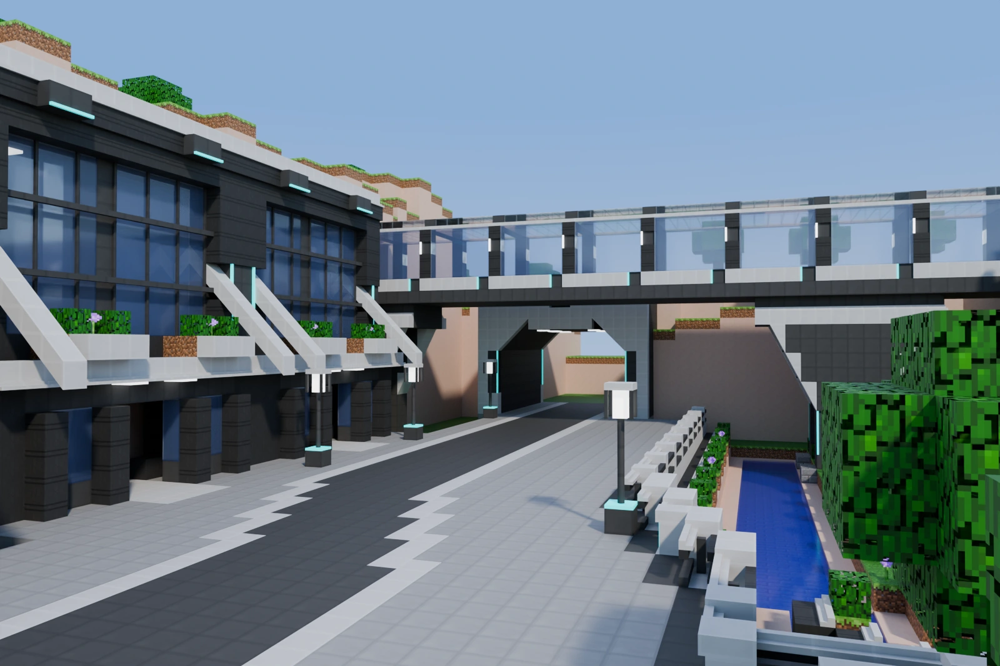
The straight and bent avenues meet the molded portal. A roofed crossing passes above, with the park and lined river below.
Offline installed-texture renders, with illustrative daylight. Water and landscape in the assembly show an example site.
Choose a piece.
Open a render to zoom in on the shaped blocks and cuts.
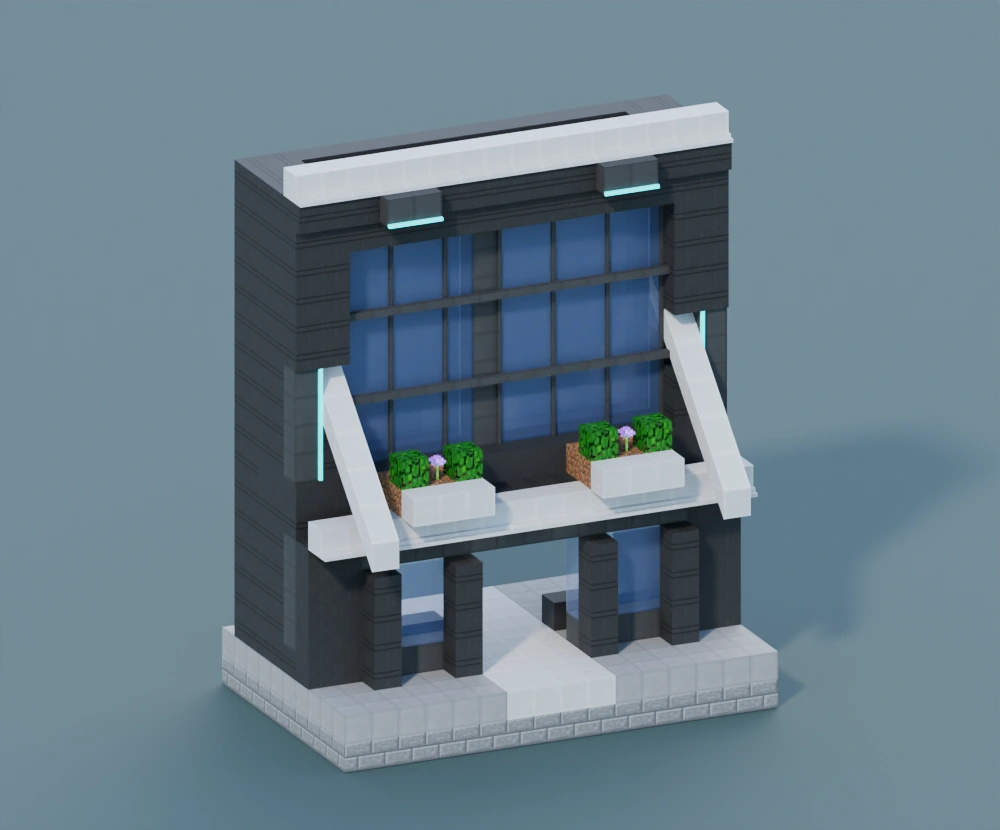
Planted diagonal facade bay
Recessed two-level glazing, pale diagonal knees, a planted sill and a four-wide flush entry. Repeat the bay every 16 blocks along the hall.
Placement and openings
Street-side door · E · Z6–9 · walk Y+0
Hall-side threshold · W · Z6–9 · walk Y+0
Minimum from origin (0, -2, 0)
Build guide ↗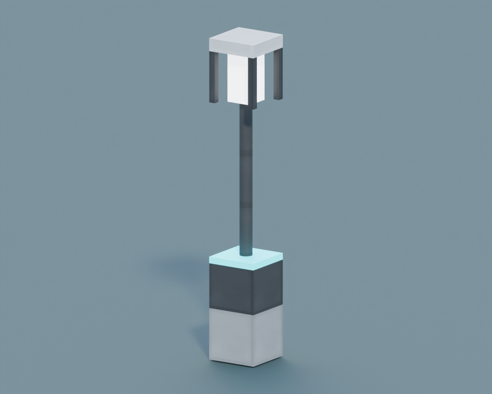
Slim promenade lantern
Round charcoal mast on a cyan-capped plinth, with a white inset diffuser and a thin pale crown. Place it on the outer sidewalk at regular intervals.
Placement and openings
Set against the adjoining piece as shown in its placement guide.
Minimum from origin (0, -1, 0)
Build guide ↗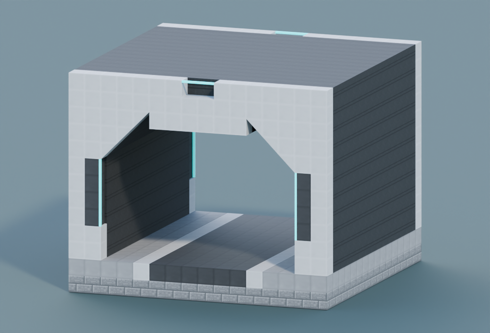
Faceted canyon road portal
A pale arch at each mouth frames a dark vaulted reveal. The twelve-block road carries through at Y0 under restrained cyan jamb cuts and white pin lights.
Placement and openings
North road · N · X2–13 · walk Y+0
South road · S · X2–13 · walk Y+0
Minimum from origin (0, -2, 0)
Build guide ↗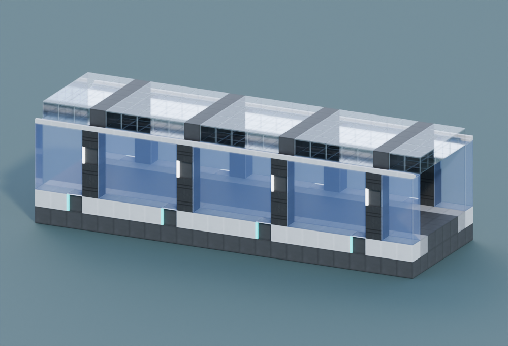
Glazed crossing span
A continuous six-wide crossing enclosed by recessed blue glass. Pale molded coping, dark mullions and pin lights repeat every six blocks.
Placement and openings
West landing · W · Z1–6 · walk Y+0
East landing · E · Z1–6 · walk Y+0
Minimum from origin (0, -2, 0)
Build guide ↗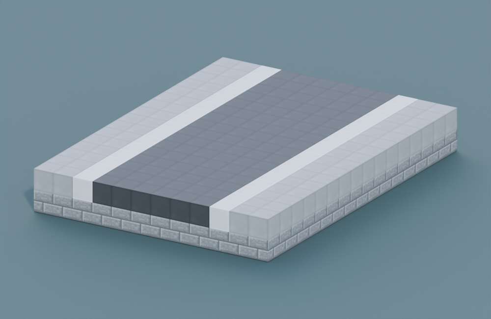
Straight cliff avenue
A six-wide charcoal tiled lane with pale curb lines and a flush sidewalk on each side. Set the hall against the west edge and the river walk against the east edge.
Placement and openings
Road · N · X0–11 · walk Y+0
Road · S · X0–11 · walk Y+0
Hall sidewalk · W · Z0–15 · walk Y+0
River sidewalk · E · Z0–15 · walk Y+0
Minimum from origin (0, -2, 0)
Build guide ↗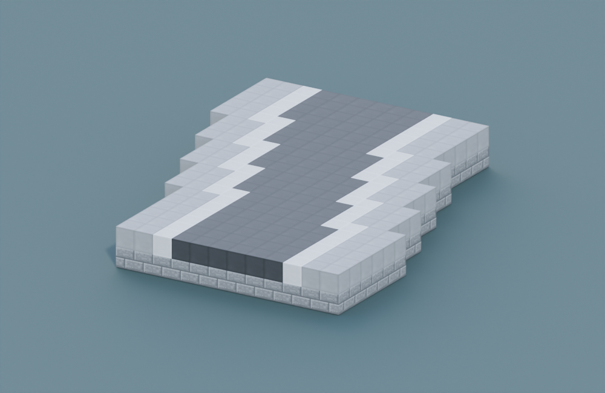
Faceted avenue bend
The avenue shifts four blocks east over twenty rows. Its flat curb follows the bend in one-block facets and both twelve-wide roads meet flush.
Placement and openings
Road · N · X0–11 · walk Y+0
Road · S · X4–15 · walk Y+0
Minimum from origin (0, -2, 0)
Build guide ↗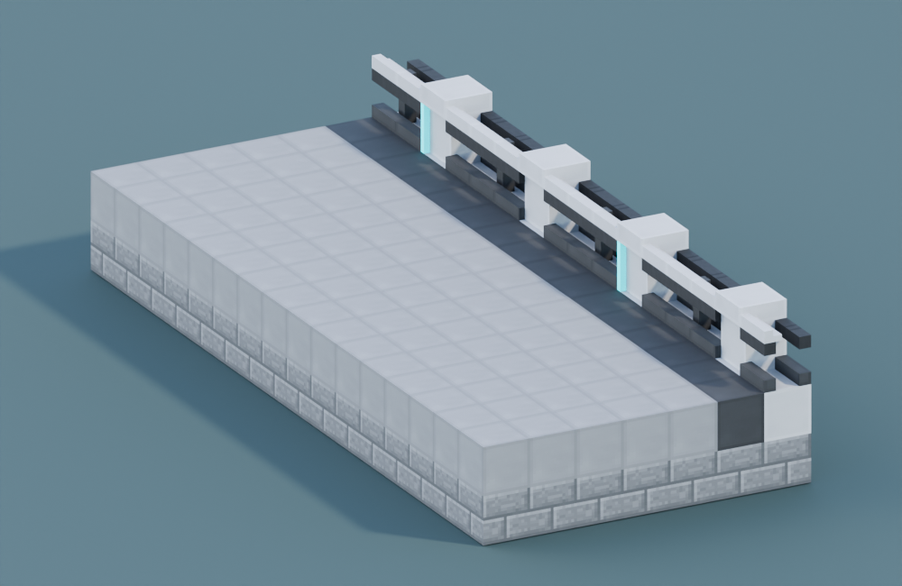
Open-rail river promenade
Six blocks of flush promenade behind a narrow rail. Pale capped piers frame dark open microblock rails and occasional one-eighth cyan insets. Plant the separately lined bank beyond the rail.
Placement and openings
Promenade · N · X0–5 · walk Y+0
Promenade · S · X0–5 · walk Y+0
Street sidewalk · W · Z0–15 · walk Y+0
Minimum from origin (0, -2, 0)
Build guide ↗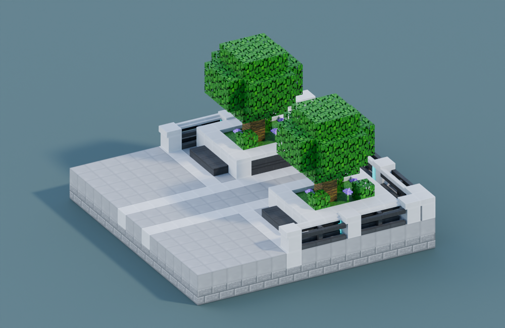
Planted pocket court
A river terrace with two raised gardens, alliums, jungle trees and shallow bench seats. The four-wide crosswalk opens from the avenue onto a clear overlook and the six-wide path continues past it.
Placement and openings
Promenade · N · X0–5 · walk Y+0
Promenade · S · X0–5 · walk Y+0
Garden crossing · W · Z6–9 · walk Y+0
Minimum from origin (0, -2, 0)
Build guide ↗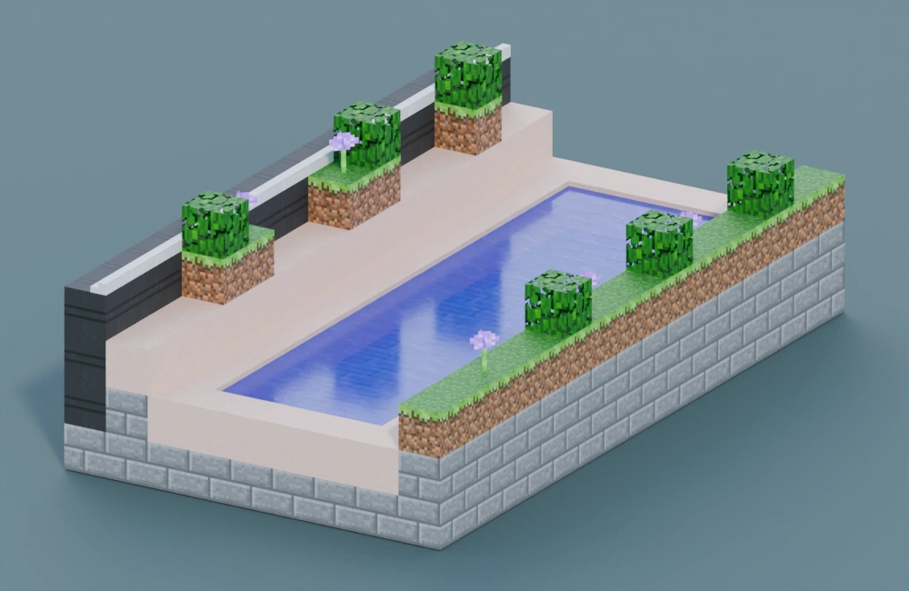
Lined river reach
A stone bed, pale clay shelves and planted edges below the promenade. Four cells across by fourteen cells long for hand-fill. End caps hold a detached pool. When extending the stream, seal the adjoining bed and banks before opening the end caps.
Placement and openings
Set against the adjoining piece as shown in its placement guide.
Minimum from origin (0, -5, 0)
Build guide ↗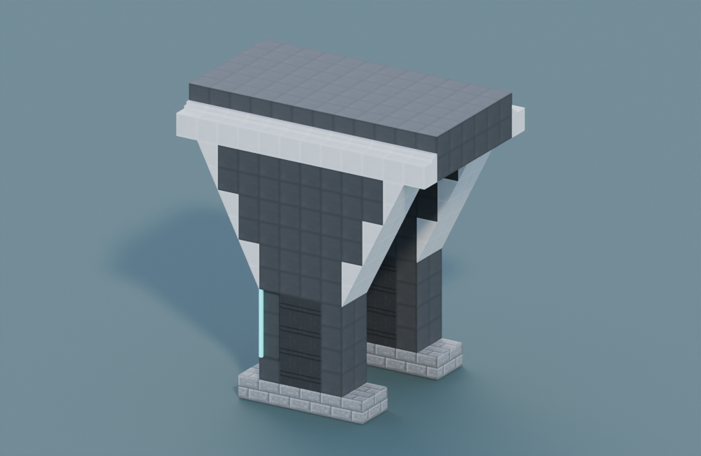
Flared bridge bearing
Paired charcoal columns flare into a molded crosshead beneath the glass span. Thin cyan strips follow the columns.
Placement and openings
Set against the adjoining piece as shown in its placement guide.
Minimum from origin (0, -15, 0)
Build guide ↗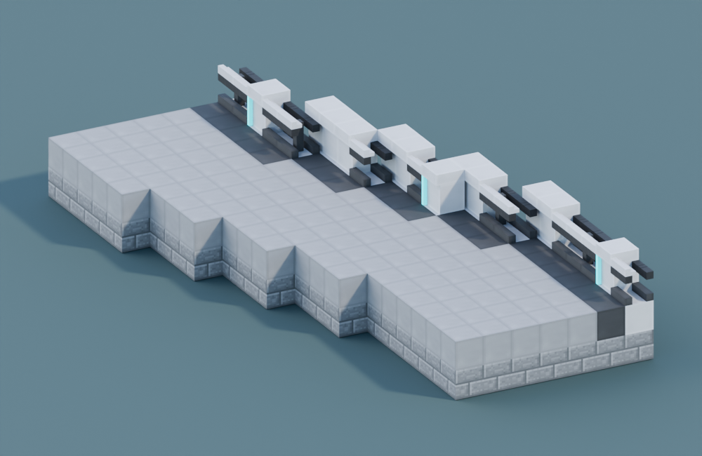
Faceted promenade bend
A six-wide path beside the avenue bend with the same four-block eastward shift. Double piers close each rail offset. Align the western side beside the CP06 avenue edges.
Placement and openings
Promenade · N · X0–5 · walk Y+0
Promenade · S · X4–9 · walk Y+0
Minimum from origin (0, -2, 0)
Build guide ↗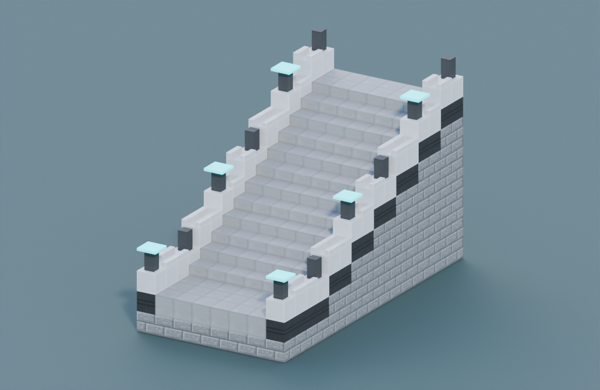
Terrace stair
Six clear blocks climb from the lower landing to the upper walk in half-block steps. Pale rails carry cyan markers at the landings.
Placement and openings
Upper landing · N · X1–6 · walk Y+6
Lower landing · S · X1–6 · walk Y+0
Minimum from origin (0, -2, 0)
Build guide ↗Match the edges.
Pick an orientation in the kit and align the port’s full width and walking height. Local X increases east and Z south. Move the next piece one block beyond the joined edge.
- Road to portal
- CP03 is 16 long with the street centered at X2–13. At its south mouth, set CP05 at offset (+2, 0, +16). The pale curbs and dark center lane continue through the opening.
- Road and promenade bend
- Set CP11 twelve blocks east of CP06 at the same Y and Z. At the south end of CP06 set CP05 at offset (+4, 0, +20). At the south end of CP11 set CP07 at the same relative offset. The lane and walkway each shift east four blocks.
- Hall to sidewalk
- Set the east edge of CP01 against the west sidewalk of CP05. Its four-block-wide door occupies Z6–9 at Y0. Repeat the bay every 16 blocks and keep lamps out of each doorway.
- Crossing and stair
- CP04 has six clear walking blocks. Repeat it every 24 blocks east or west. Under its center, use CP10 at offset (+6, 0, 0) where the footing meets surveyed rock. CP12’s upper landing sits six blocks above its lower landing.
- Park and water
- Place the four-wide west entry of CP08 opening onto the avenue. Run CP07 up to its north or south walkway. CP09 includes fill positions at local Y−4. Close the bed and banks before opening the clay caps and connecting reaches.
The pack includes all four supplied facings, per-piece coordinates, material counts and printable layers. Place the schematic minimum at the offset in each build guide and use Schematica with Printer OFF. Game imports, cutting yields, lighting and site fit still need checking.